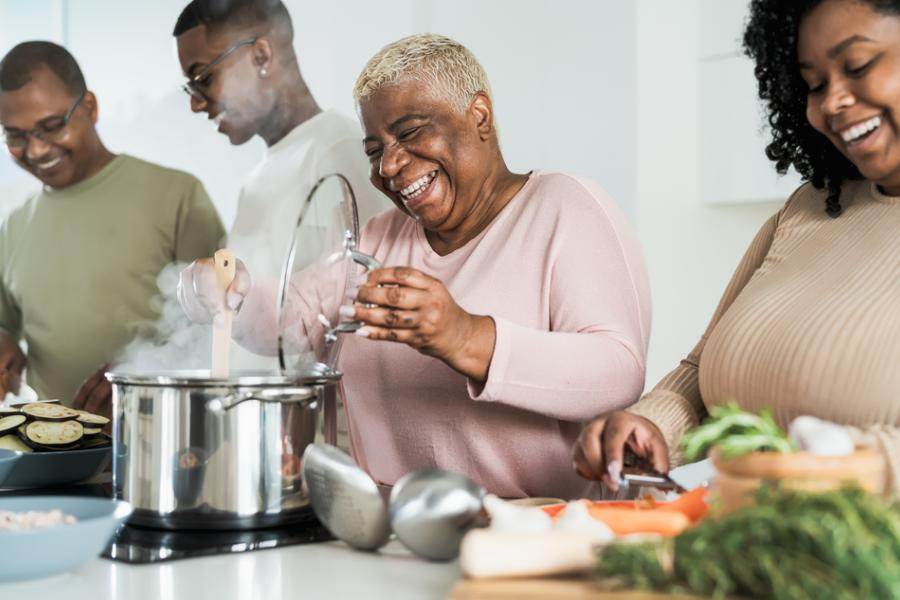

O que é?
O PAAN é o Programa de Assistência Alimentar e Nutricional Emergencial,
do Município de Belo Horizonte, instituído pela Lei nº 11.193/2019, com o objetivo de garantir provisão alimentar às famílias em situação de insegurança alimentar encaminhadas pelos serviços socioassistenciais.
Como funciona?
O programa é realizado de forma integrada entre as políticas de segurança alimentar e nutricional e de assistência social, e possui as seguintes ações:
- Oferta de um cartão exclusivo para aquisição de alimentos, em lojas credenciadas, com recarga mensal no valor de R$100,00, pelo período de seis meses, podendo ser prorrogado por igual período;
- Realização de oficinas de educação alimentar, cursos de qualificação profissional na área da gastronomia e atividades de cultivo de alimentos, como hortas comunitárias;
- Acompanhamento socioassistencial no Sistema Único de Assistência Social - SUAS.
A participação da família no PAAN ocorre no período de seis meses,
e poderá ser prorrogada por mais seis meses, mediante análise das equipes de referência dos serviços do Sistema Único de Assistência Social (SUAS) e
da equipe da Subsecretaria de Segurança Alimentar e Nutricional (SUSAN). Quando for o caso, a família será orientada pelos serviços socioassistenciais para os procedimentos de prorrogação.
Quem pode participar das oficinas e cursos de formação?
Qualquer membro da família incluída no PAAN poderá participar das oficinas de educação alimentar e das atividades de cultivo de alimentos, como as hortas comunitárias.
No caso dos cursos de formação e qualificação profissional na área de gastronomia, apenas pessoas acima de 16 anos.

Como participar das oficinas e cursos de formação?
Oficinas de Educação Alimentar e Nutricional:
Estas oficinas serão realizadas em todas as Regionais, por meio dos CRAS e de outros equipamentos de Assistência Social ou de Segurança Alimentar e Nutricional. O cronograma das oficinas e as orientações sobre a inscrição serão compartilhados com as famílias através dos seguintes canais: rede de serviços da Assistência Social (CRAS, CREAS, etc.), SUSAN e OSC Inasec.
Cursos de qualificação profissional na área de alimentação/gastronomia:
Os cursos serão ofertados no Centro de Referência em Segurança Alimentar e Nutricional - Mercado da Lagoinha. A disponibilidade de vagas será compartilhada com as famílias através dos seguintes canais: rede de serviços da Assistência Social (CRAS, CREAS, etc.), SUSAN e organização Inasec. Os participantes receberão vale-transporte para o deslocamento até o local das aulas.
Cultivo de alimentos nas unidades produtivas de agricultura urbana:
Para implantação das Unidades Produtivas, as famílias devem procurar os serviços de Assistência Social (CRAS, CREAS, etc.), ou a SUSAN e Organização Inasec.